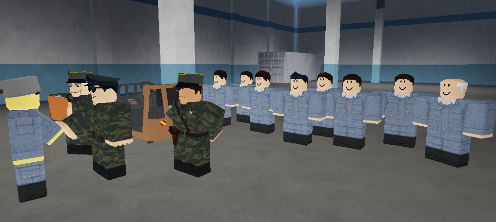

President Steveemerald Inspects New Industrial Complex in Novi Beograd
The respected President Steveemerald, leader of the People's Serbian Republic, conducted a close inspection of the newly completed industrial complex in Novi Beograd. During his visit, the President met with engineers, technicians and factory workers.